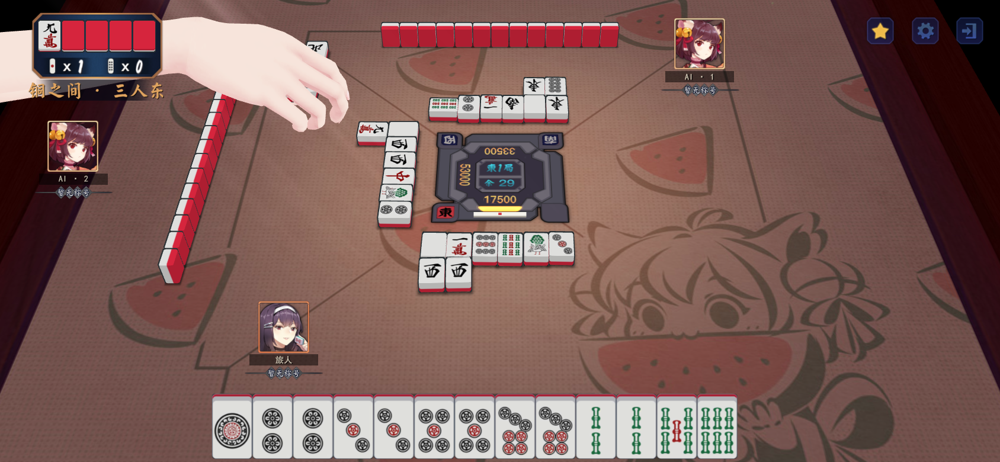
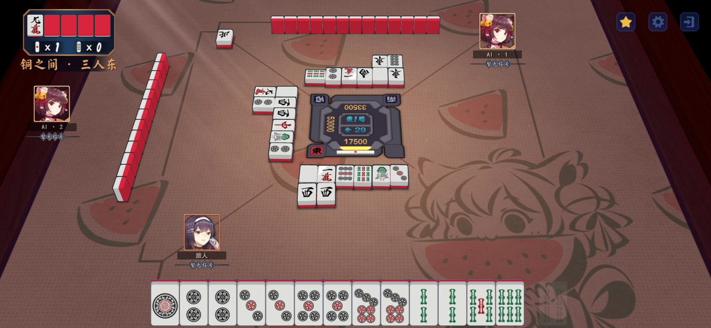
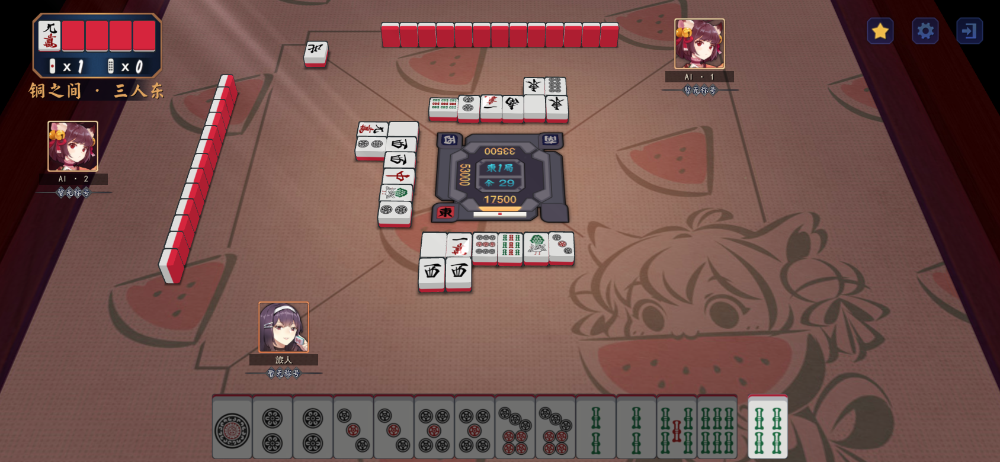
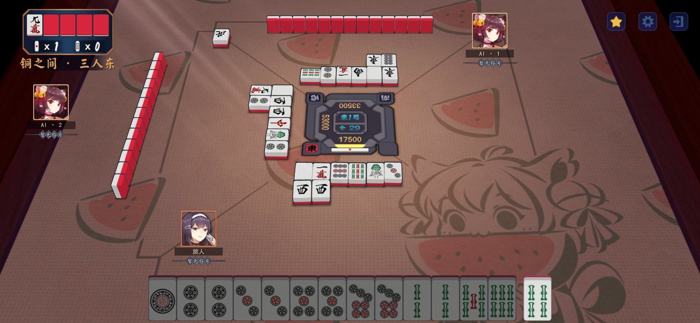
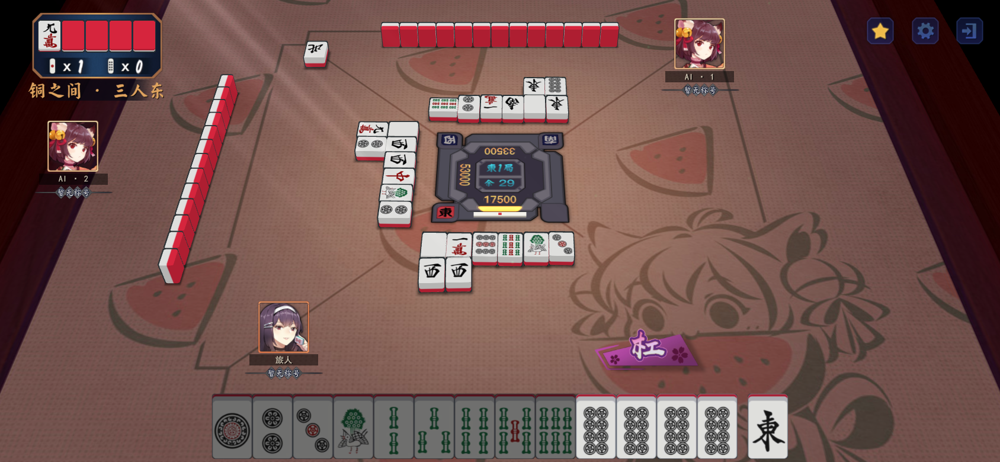
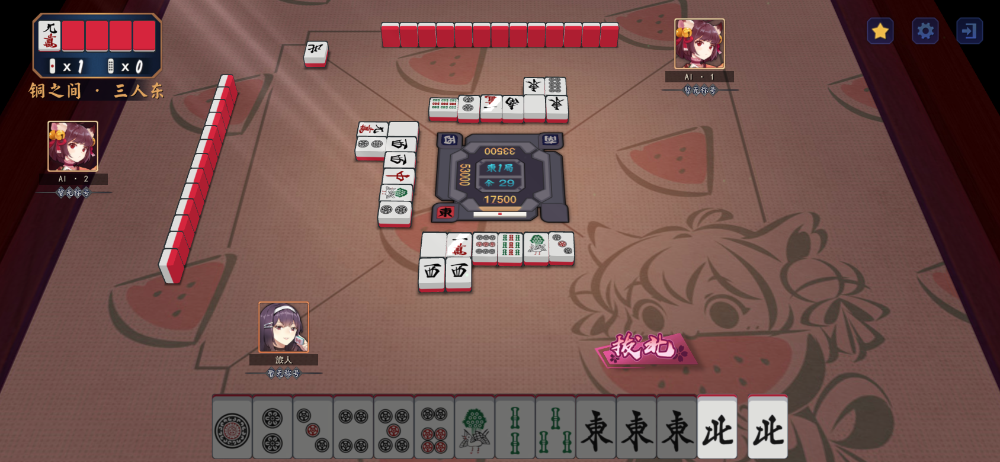
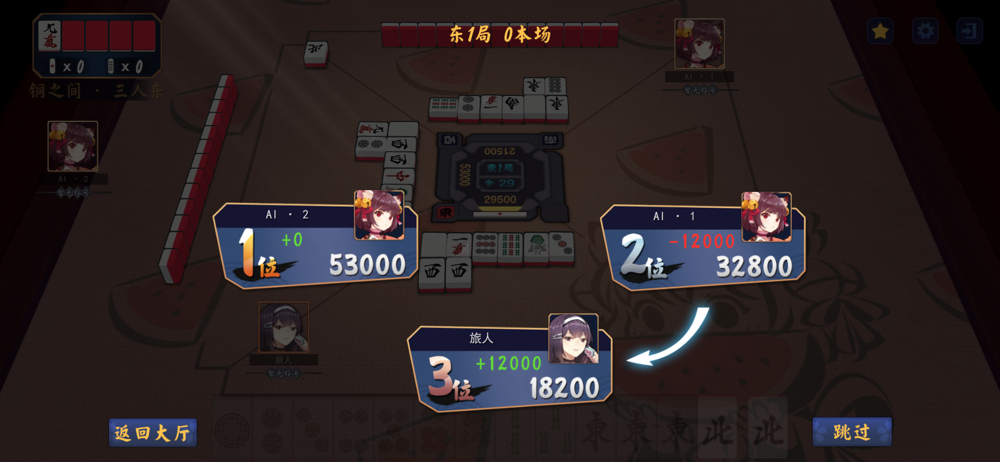
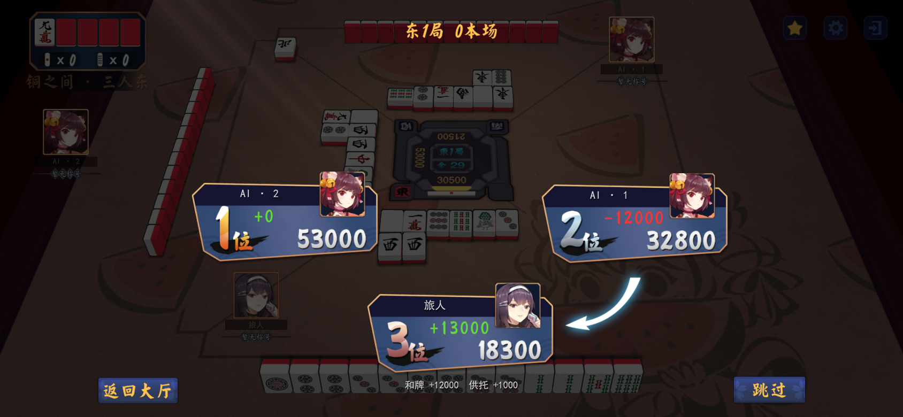
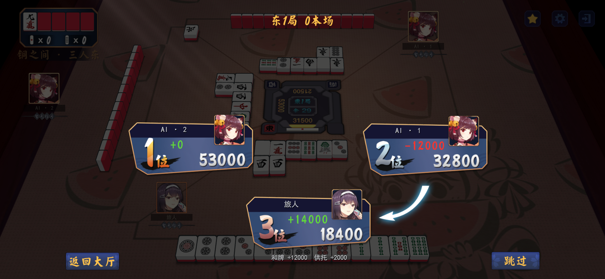
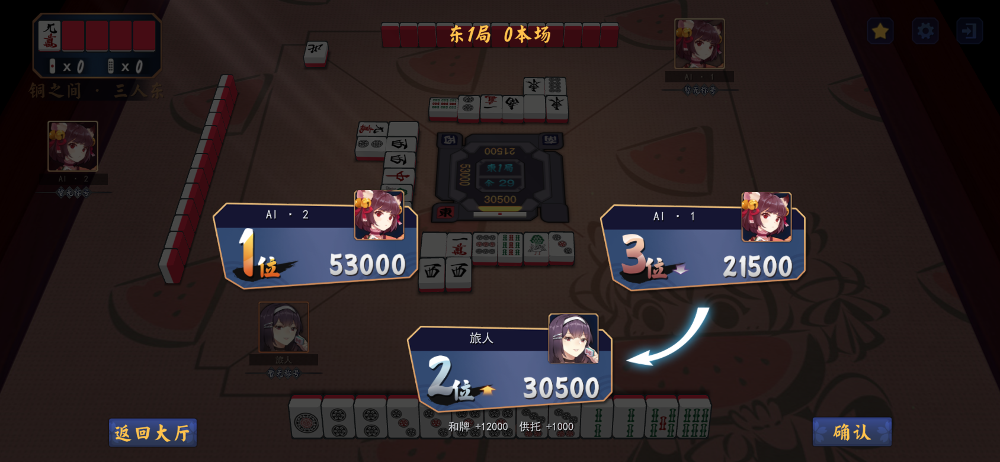

0.5.34 立直摸牌与结算截图
上一家出牌及自家摸牌展示结束前手牌保持正常色；摸牌完成后仅不可打牌置灰，可打四条保持正常。保留可杠／拔北牌的正常颜色。
和牌12000＋一根供托1000＝实际增分13000；点炮者只付12000。结算新增来源说明。截图覆盖0／1／2根供托和最终30500分。
10张实际Unity渲染截图，来自合成测试局面，非安卓真机截图。

unity-0.5.34-review-0534-01-previous-discard-normal.png
unity-0.5.34-review-0534-02-own-draw-normal.png
unity-0.5.34-review-0534-03-s4-legal.png
unity-0.5.34-review-0534-04-s4-legacy-legal.png
unity-0.5.34-review-0534-05-special-kan.png
unity-0.5.34-review-0534-05-special-north.png
unity-0.5.34-review-0534-06-scores-pot-0.png
unity-0.5.34-review-0534-06-scores-pot-1.png
unity-0.5.34-review-0534-06-scores-pot-2.png
unity-0.5.34-review-0534-07-scores-final-30500.png